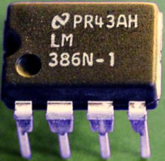
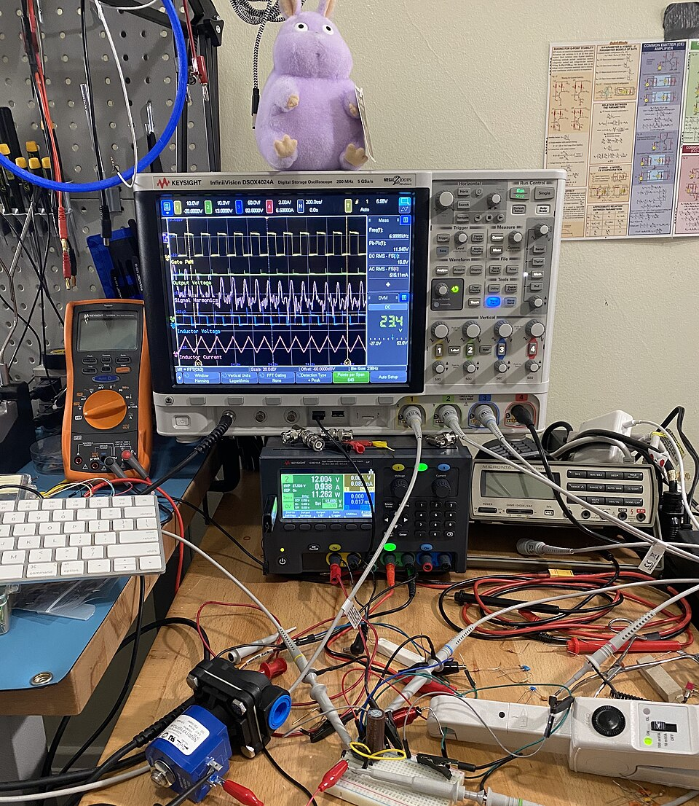

Audio amplifiers, coupling and output limits
Understand how a small signal drives a speaker and distinguish supply bias, gain, clipping and coupling loss.
The speaker needs voltage swing and current
A small signal can contain a complete voice waveform but have too little available current to move a speaker. A power amplifier gets energy from its supply and makes a larger controlled waveform. A gain of 20 multiplies a 25 mV peak-to-peak input by 20 to give about 0.50 V peak-to-peak at the output when the stage is linear. With an ideal 8 Ω resistive load, a 0.50 V peak-to-peak sine is about 0.177 V RMS and about 4 mW. A speaker’s real impedance varies with frequency, so this calculation is a bench estimate.

Photo by Samba pa ti. Original photo · Public domain.


Photo by Radarvector, resized. Original photo · CC BY-SA 4.0.

Why one side of a coupling capacitor reads DC
In the TI example a 5 V supply powers the LM386 and the output sits near half that voltage at idle. The waveform swings around that bias. A series capacitor charges to the average difference between the amplifier output and the load return. Once settled, steady DC current through the capacitor is negligible. Changing voltage still drives an AC current that moves the speaker.
Using R = 8 Ω and C = 220 µF, the corner is about 90 Hz. With 10 µF it rises to about 2 kHz. At 400 Hz the simple model predicts relative amplitudes of about 0.98 and 0.20. That is why a stage can show a good waveform at the IC and still sound weak at its speaker. With real equipment, include series resistance, the speaker’s frequency-dependent load and the full documented circuit. TI LM386 application schematic.
Clipping, coupling loss and a missing input look different
| Observed at the test points | Interpretation |
|---|---|
| Input sine clean, amplifier output flat at one or both extremes | The output reaches a limit. Reduce input amplitude and compare supply voltage and load under the same test. |
| Healthy output swing at the chip, much smaller after the capacitor at low frequency | Check the coupling network and load. Compare a higher frequency at the same measured input amplitude. |
| Output idle bias present, no AC swing, no input waveform | Trace the source and volume control first. A bias measurement proves only part of the stage. |
Watch a bench demonstration · Find where the source enters the LM386 circuit and where the speaker joins it. Use the datasheet’s gain-of-20 circuit and your measured input for the prediction. Build a simple LM386 audio amplifier · Afrotechmods.
Why some speakers have two driven wires
A bridge-tied-load output drives both speaker terminals. The speaker sees their voltage difference. Neither lead should be assumed to be circuit ground. An earth-referenced scope ground attached to a driven output can short the stage. Use the documented differential measurement setup and available supervision. For this first exercise use the single-ended P59 circuit with the scope earth connected to the verified circuit common. P59 audio signal-tracing lab.